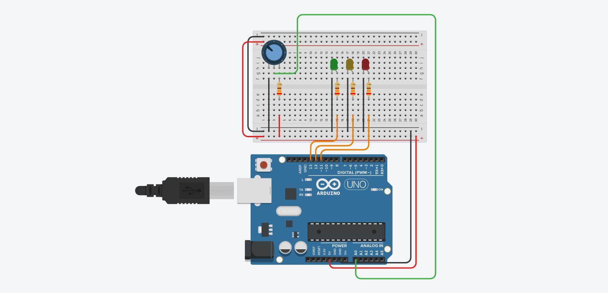

MULARONI MATTIA


PROGETTI ARDUINO
VISUALIZZATORE DI POTENZIOMETRO
Funzionamento
Arduino riceve in input un segnale analogico dal potenziometro (il quale può variare a seconda della resistenza immessa), ed a seconda di quanto si gira il pomello, verrà acceso in sequenza il led verde, giallo e rosso.
Questo progetto è propedeutico a progetti più grandi nei quali è necessaria una buona conoscenza di questo componente.
Lista componenti
| IMMAGINE | NOME PRODOTTO | QUANTITÀ | LINK |
|---|---|---|---|
 | ARDUINO UNO | 1 | AMAZON |
 | BREADBOARD | 1 | AMAZON |
 | POTENZIOMETRO | 1 | AMAZON |
 | LEDS | 3 | AMAZON |
 | RESISTORI 230 OHM | 4 | AMAZON |
 | JUMPERS | 13 | AMAZON |
Funzionamento
1. Potenziometro
Il potenziometro è una resistenza variabile, ovvero che a seconda della rotazione del pomello o dello scorrimento di una guida (dipende dai modelli) varia la sua resistenza da un minimo ad un massimo, solitamente si presenta con una struttura a 3 pin (negativo, segnale e positivo).


I potenziometri vengono letti da arduino mediante i suoi pin analogici (in questo caso verrà usato il pin A0), essi leggono valori da 0 a 1023, ma potrebbero essere più bassi nel caso si inserisca nel potenziometro una resistenza più alta, in ogni caso questo non crea problemi, una accortezza invece, potrebbe essere quella di non usare resistenze troppo basse, in quanto il segnale potrebbe arrivare a fondoscala (1023) prima ancora che il potenziometro arrivi a finecorsa.
La scelta della resistenza è dipendente dalle caratteristiche del potenziometro, è quindi necessario fare delle prove per raggiungere risultati accettabili.
Prestare attenzione alla polarità del potenziometro, in quanto, se invertito il negativo col positivo, il segnale che arriva ad arduino potrebbe essere inverso.
2. Spiegazione codice e lettura valori
Per ottenere una lettura precisa dei 3 led, è necessario rilevare tramite la porta seriale il valore massimo che legge arduino, dividerlo per 3 ed assegnalo ai vari if per accendere i led.
Nel mio caso ho rilevato come valore massimo 1022, l'ho diviso per 3, ottenendo 340.6 (arrotondato a 341) ed ho programmato la scheda in modo che sotto quel valore accenda il led verde, tra quel valore ed il suo doppio (682 e quindi 3/4) accenda il led verde e giallo e oltre i 340 (oltre 682) accenda tutti i led.
Ecco il codice per la lettura del valore del potenziometro.
Codice